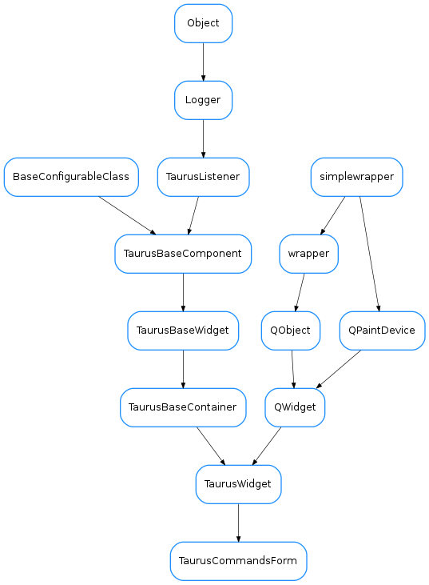

TaurusCommandsForm¶

-
class
TaurusCommandsForm(parent=None, designMode=False)[source]¶ Bases:
taurus.qt.qtgui.container.tauruswidget.TaurusWidgetA form that shows commands available for a Device Server
-
applyConfig(configdict, **kwargs)[source]¶ extending
TaurusBaseWidget.applyConfig()to restore the splitter configParameters: configdict (:class:~`dict`) – See also
TaurusBaseWidget.applyConfig(),createConfig()
-
createConfig(allowUnpickable=False)[source]¶ extending
TaurusBaseWidget.createConfig():type alllowUnpickable: :class:~`bool` :param alllowUnpickable:Return type: :class:~`dict` <:class:~`str`, :class:~`object`> Returns: configurations (which can be loaded with applyConfig()).
-
getSplitter()[source]¶ returns the splitter that separates the command buttons area from the output area
Return type: :class:~`QSplitter` Returns:
-
getViewFilters()[source]¶ returns the filters used in deciding which commands are displayed
Return type: :class:~`sequence` <:class:~`callable`> Returns: a sequence of filters
-
setDefaultParameters(params)[source]¶ sets the values that will appear by default in the parameters combo box, the command combo box for the command will be editable only if the first parameter is an empty string
Parameters: params (:class:~`dict` <:class:~`str`, :class:~`list`>) – { ‘cmd_name’: [‘parameters string 1’, ‘parameters string 2’ ] }
-
setExpertView(expert)[source]¶ sets the expert view mode
Parameters: expert (:class:~`bool`) – If expert is True, commands won’t be filtered. If it is False, commands with display level Expert won’t be shown
-
setSortKey(sortkey)[source]¶ sets the method used to sort the commands (cmd_name by default)
Parameters: sortkey (:class:~`callable`) – a function that takes a CommandInfoas argument and returns a key to use for sorting purposes (e.g. the default sortKey islambda x:x.cmd_name)
-
setViewFilters(filterlist)[source]¶ sets the filters to be applied when displaying the commands
Parameters: filterlist (:class:~`sequence` <:class:~`callable`>) – a sequence of command filters. All filters will be applied to each command to decide whether to display it or not. for a command to be plotted, the following condition must be true for all filters: bool(filter(command))==True
-